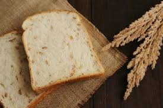
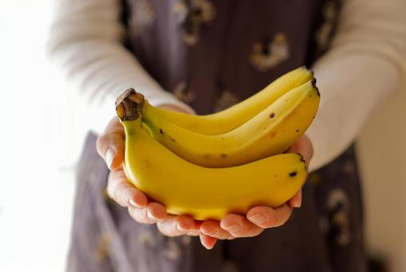
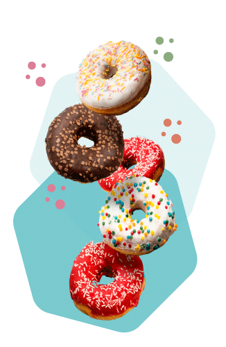
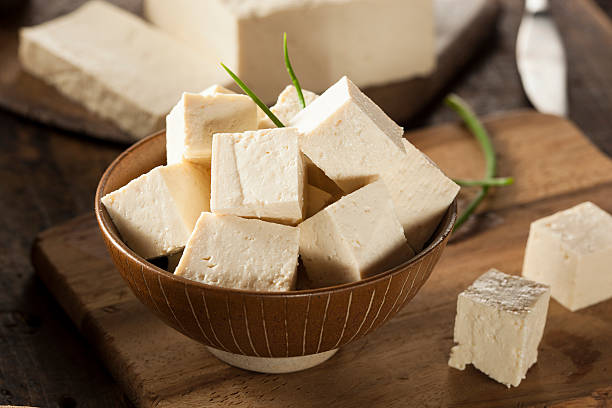

全粒粉生地
外はザクッ、中はふわっ。からだ想い全粒粉ドーナツ。 小麦まるごとんの香ばしさが広がる、優しい生地。 食物繊維やビタミン、ミネラルがぎゅっと詰まった、自然のちからを美味しく。
豆腐バナナ生地
絹ごし豆腐のやさしいコクと、バナナの自然な甘み。 バナナの自然なボリュームで１個でも満足感しっかり。 朝食や軽食代わりにもぴったり。

豆腐生地
絹ごし豆腐から練りこんだ、ふんわり軽やかな優しい ドーナツ. たんぱく質も豊富なうえに、低脂質・糖質オフなので おやつにしても罪悪感ゼロ。
トランス脂肪酸低オイル
トランス脂肪酸オイルをほとんど含まない体に優しい油を使って、1つ1つ心を込めて丁寧に揚げています。 素材のおいしさを大切にした、安心してお召し上がりいただけるドーナツです。